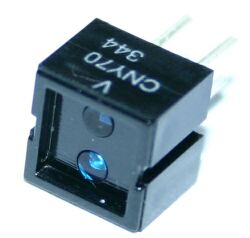
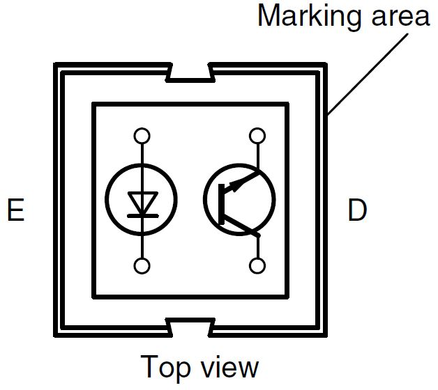

Il sensore CNY70 è un sensore di tipo ottico. Al suo interno sono presenti un diodo emettitore ad infrarosso (che lavora su una lunghezza d'onda di 950 nm) ed un foto transistor. La distanza di lettura si aggira sui 0,3 mm.
All'interno della capsula di questo sensore è montato un diodo LED che emette raggi infrarossi, invisibili all'occhio umano. Il diodo è dotato di due terminali, l'anodo (A) ed il catodo (K). Sulla stessa superficie è ubicato un foto transistor che ha la proprietà di condurre corrente fra l'emettitore (E) e il collettore (C), proporzionale alla quantità di luce che incide sulla base. Dato che sia l'emettitore sia il ricevitore dei raggi sono disposti sulla stessa superficie, è necessario che davanti ad entrambi sia presente una superficie riflettente, per fare in modo che il foto transistor possa ricevere i raggi che genera il led. La superficie riflettente deve essere situata a pochi millimetri da quella su cui sono montati emettitore e ricevitore, per far si che i raggi riflessi abbiano sufficiente intensità.
void setup() {
Serial.begin(9600);
}
void loop()
{
Serial.println(analogRead(1)); // 0=Bianco 1023=Nero
delay(100);
}
{kind=link}